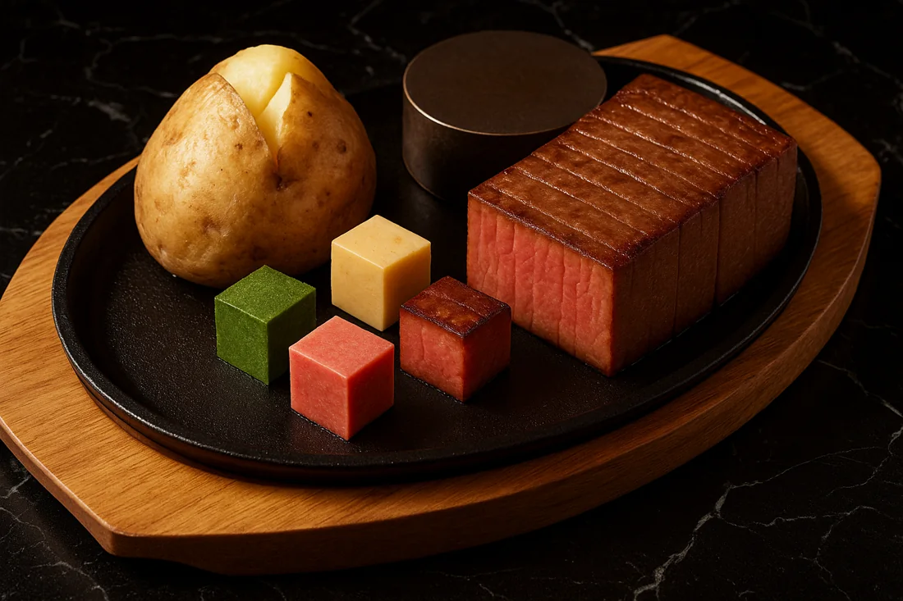

お食事からデザートまで、彩り豊かなメニューをご用意しました。

INFORMATION
お知らせ
太陽系各拠点の店舗情報を公開しました。
STORE INFORMATION
お近くのチキンハウスを探す
地球・火星・木星圏から外惑星まで、太陽系の店舗をご案内します。

INFORMATION
お食事からデザートまで、彩り豊かなメニューをご用意しました。
太陽系各拠点の店舗情報を公開しました。
STORE INFORMATION
地球・火星・木星圏から外惑星まで、太陽系の店舗をご案内します。